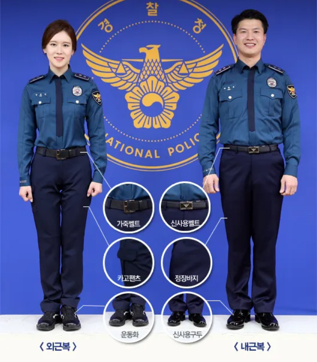
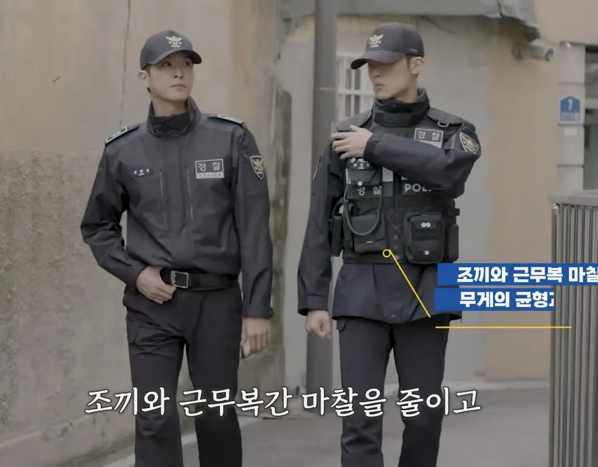

https://humoruniv.com/pds1429977

2016년에 바뀐 현재의 경찰복

이게 신형 경찰복.
이렇게 바뀔 수도 있다 / 예시 （x）
최종안 （o）
https://humoruniv.com/pds1429977

2016년에 바뀐 현재의 경찰복

세계의 많은 경찰복이 채도가 낮은 색의 경찰복을 쓰고 있음. 색이 밝을수록 친근해보이지만 그만큼 만만해보이니까. 치안 유지하기 위해선 이미지부터 묵직하게 가져갈 필요 있다고 생각함. 순찰효과로 눈에 잘띄는건 경찰차 불키고 다니는걸로 충분하잖아 걸어다니고 자전거 타고다니던 시대도 아니고.
(반례로 인도 경찰복은 밝은 갈색이지만 걔네는 몽둥이 들고 때리고 다니니까...)
슬슬 공안으로 하려는구나
그런데 일단 무력을 사용해야하는 입장에선 위압감이 느껴지는 옷이어야 하긴 함
중티나서 그렇지 현재 의상은 너무 단정함
경찰옷은 눈에 잘보여야하지않나